learn-slovak
Design preview — palette, type, the core card, illustrations. Not the app; the look the app will have.
Brand
primary
#2457C5Brand blue. Nav, links, primary buttons, selected states, progress fill. WCAG on white 6.5:1 — safe for text.primary-strong
#1B44A0Hover/active for primary; primary text on tinted surfaces.primary-light
#8FB0F2Primary in dark mode (text/icons on dark surfaces).secondary
#F2B233Folk-embroidery gold. Streak flame, XP, badges, secondary buttons (with ink text — 1.9:1 on white, NEVER as text).secondary-deep
#8A5A08Gold as *text* on light surfaces (5.6:1). Labels like 'Natives say'.accent
#E4573DCoral, from the flag red. Used sparingly: coverage-meter fill, 'new word' dot, active recording. 3.7:1 — UI only.accent-deep
#B3311BAccent as text (5.9:1).Semantic
success
#1E9E62Correct answer fill/border, checkmarks. 3.4:1 — pair with success-deep for text.success-deep
#157A4ASuccess text (5.4:1).error
#C42F2FWrong answer, destructive actions. Deliberately cooler/darker than accent coral so they never read as the same colour. 5.5:1 — usable as text.warning
#D97706Almost-right (diacritics only), leech card, 'needs review'. Burnt orange, darker than gold so the two stay distinct. 3.2:1 — UI only.warning-deep
#A85A05Warning text (5.1:1).Register chips
štandardhovorovoformálneregionálnearchaickévulgárne
Neutrals
ink
#1B2430Body text. 14.8:1 on paper.ink-muted
#4F5B6BSecondary text, captions (7.4:1).ink-faint
#8A94A3Placeholders, disabled (3.5:1 — large only).line
#DDD6CBBorders, dividers.paper
#FAF8F4Page background. Warm off-white, not pure white — long reading sessions.surface
#FFFFFFCards.surface-sunk
#F1ECE3Input wells, inactive tabs.The sentence card
🔥 12 dníhovorovo
Dám si jednu kávičku.
Iau o cafeluță.
I'll have a coffee. — natives say: Prosím si kávu · textbook: Chcel by som kávu
▶ 1× 0.7×
Your answer: Dám si jednu kavičku — almost: kávičku has a dĺžeň
You understand 72% of casual Slovak speech
Illustrations (24, unDraw, recoloured to primary)
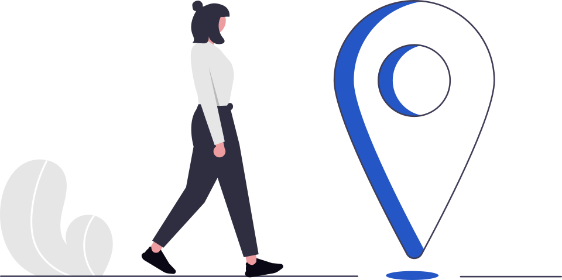
1.7 Where is…?
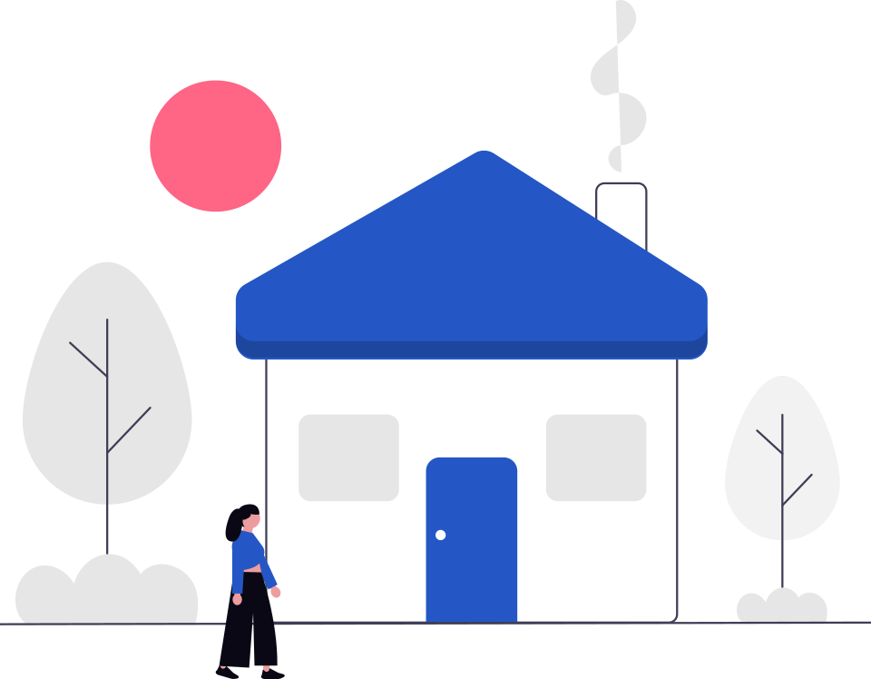
1.11 Home & things
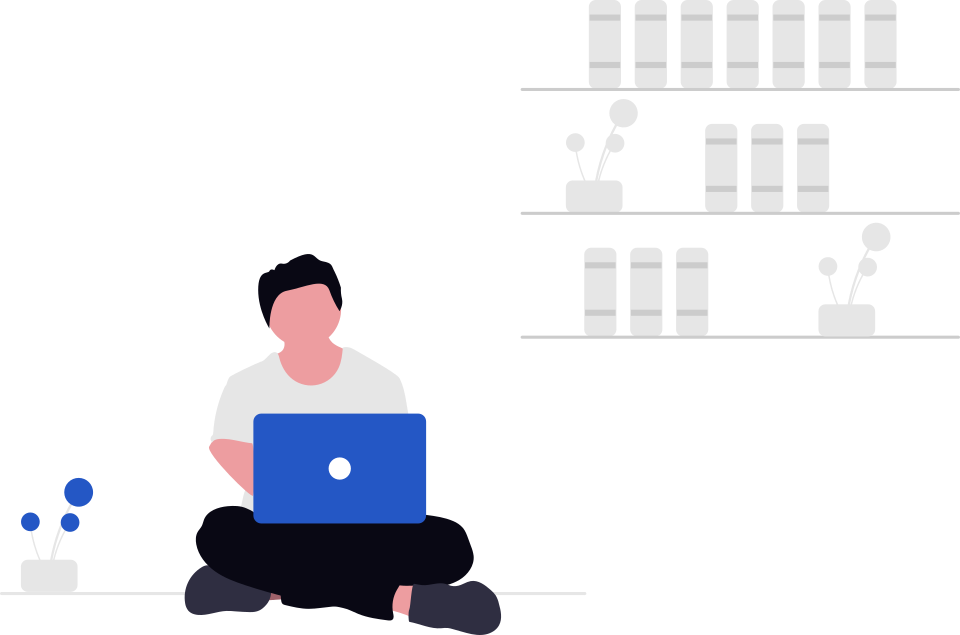
1.3 Who I am / 2.8 Work & tech
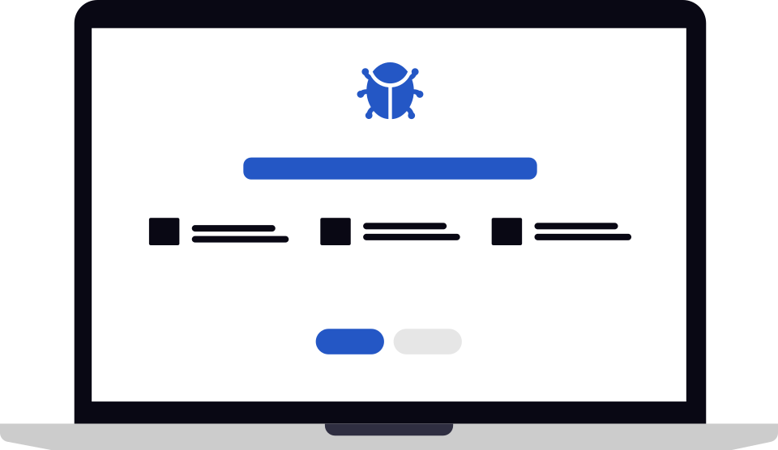
2.8 Work & tech — the bug
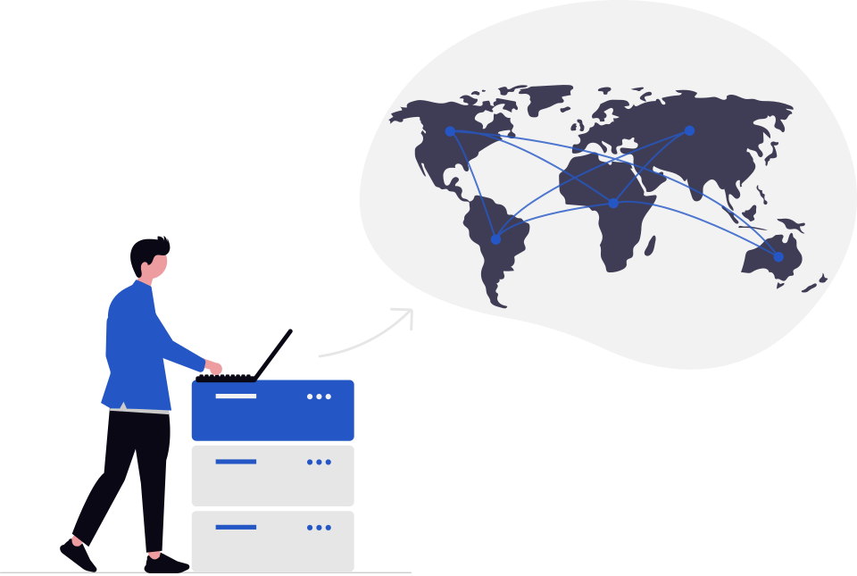
2.8 Work & tech — deploy
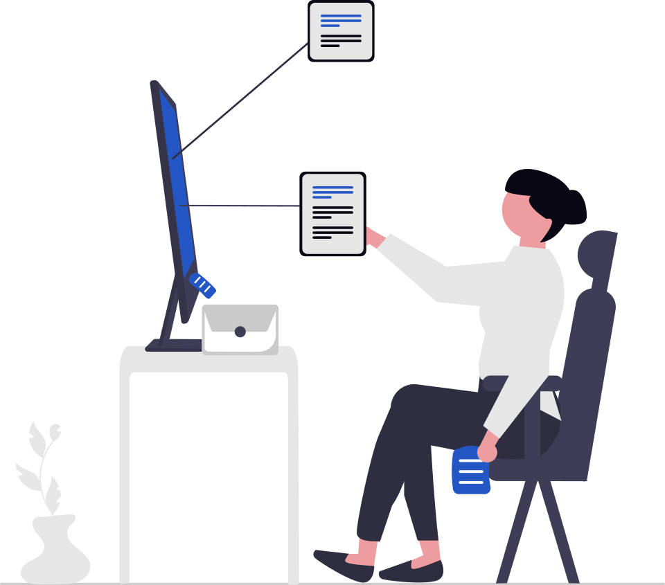
2.8 stand-up / R5
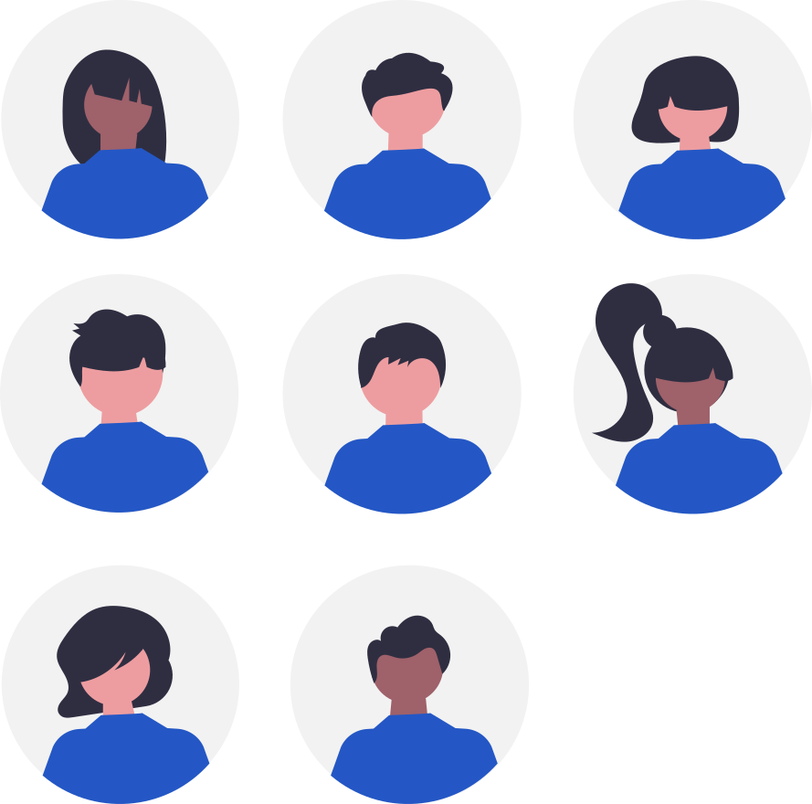
1.12 Family & people / 2.11
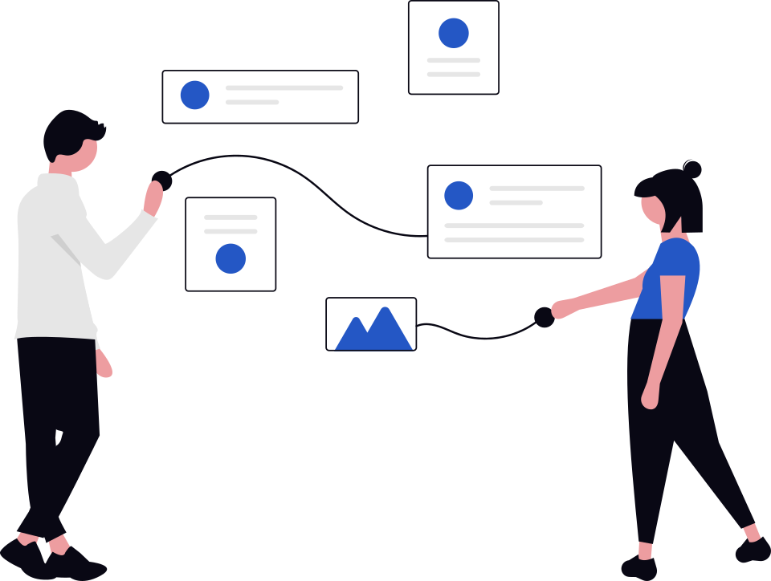
1.10 Phone & messages
R8 phone booking
Progress screen
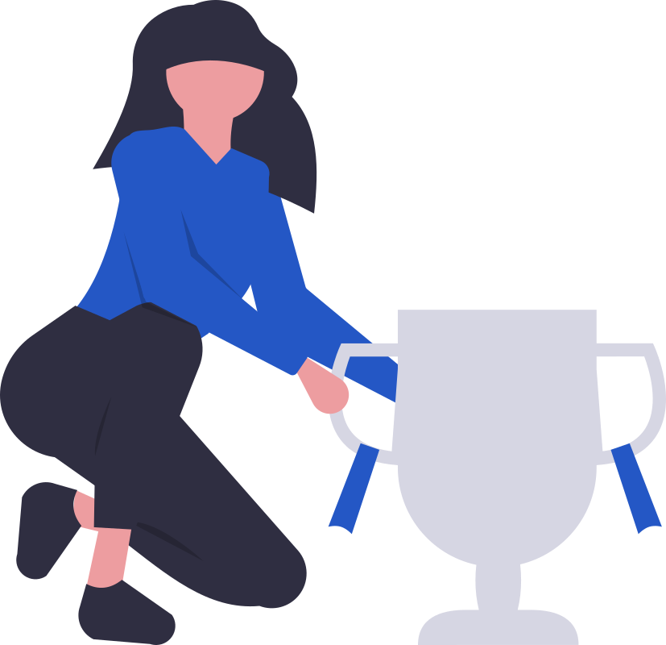
Unit complete
Session done
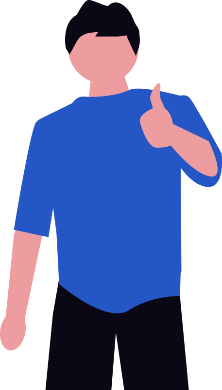
Correct answer / streak
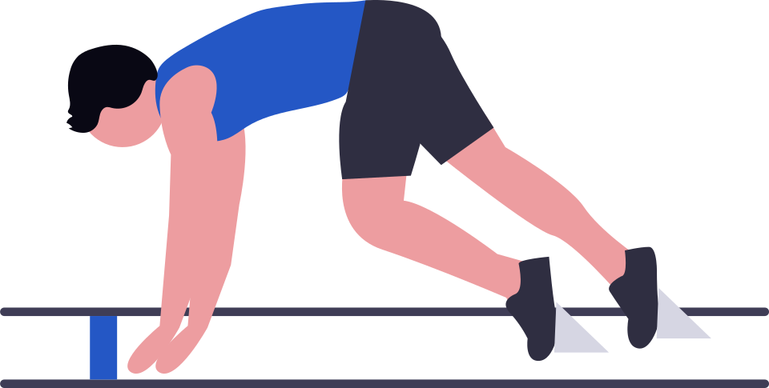
Onboarding — start
Coverage meter / phase gate
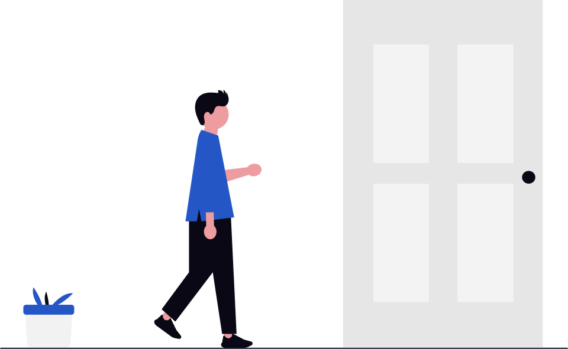
2.4 Where vs where to / transport
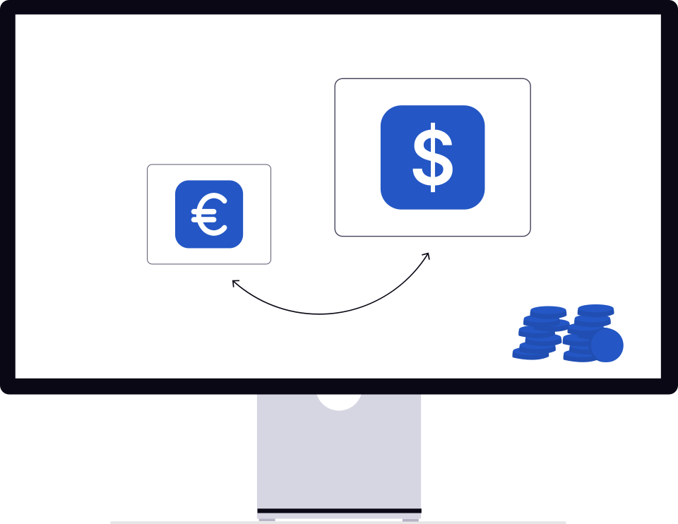
1.5 Numbers, prices
Review outbox — exported
Review outbox — reviewer
Reader / mistake diary
F3 two-way prepositions / choices
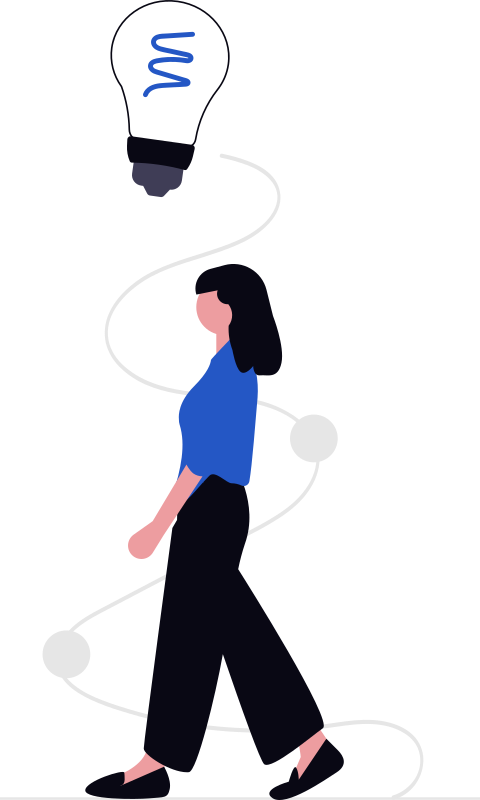
Grammar note callout
Empty search / no results
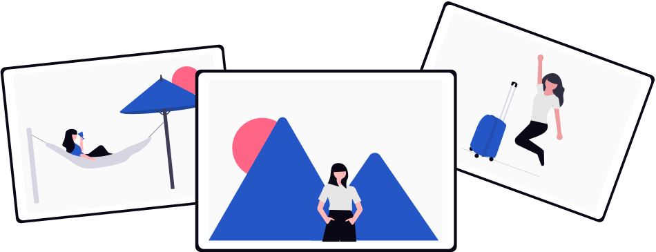
2.10 Slovakia & Romania / travel
Still to pick by hand on undraw.co: coffee, market/grocery, reading, family, pharmacy/doctor, greeting, weather, church/community.